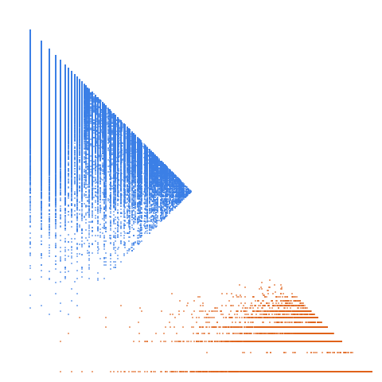

Squarefree semiprimes: Numbers that are the product of two distinct primes

Open in the 3-D viewerA006881 on the OEIS
| Terms | 100,000 (n = 1 … 100,000) |
|---|---|
| Decomposable (a > 2d) | 99,999 |
| Level class, k > L | 15,721 · 15.72 % |
| Weight class, k ≤ L | 84,278 · 84.28 % |
| Ties, k = L | 41 |
| On the level line L = 1 | 9,561 |
| Forced level, l ≤ d² | 5 |
| Range of a(n) | 6 … 460,121 |
| Range of the jump d | 1 … 47 |
| Largest weight k, level L | 460,051, 230,058 |
Products of two distinct primes. The plane is the semiprimes' almost exactly (15.72 % level against 15.71 %).
The decomposition
Every term of a strictly increasing sequence is written a(n) = k(n)·L(n) + d(n): the jump d = a(n+1) − a(n), the weight k the least divisor of a − d greater than d, the level L = (a − d)/k. A term decomposes when a > 2d; it is in the level class when k > L and in the weight class when k ≤ L. See decompwlj.com and arXiv:0711.0865, or how it works, with worked examples and a live one.